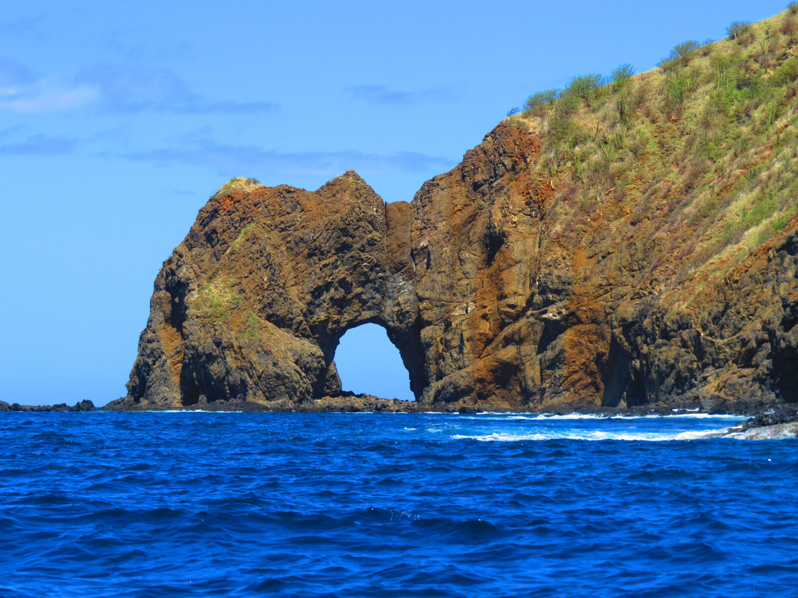
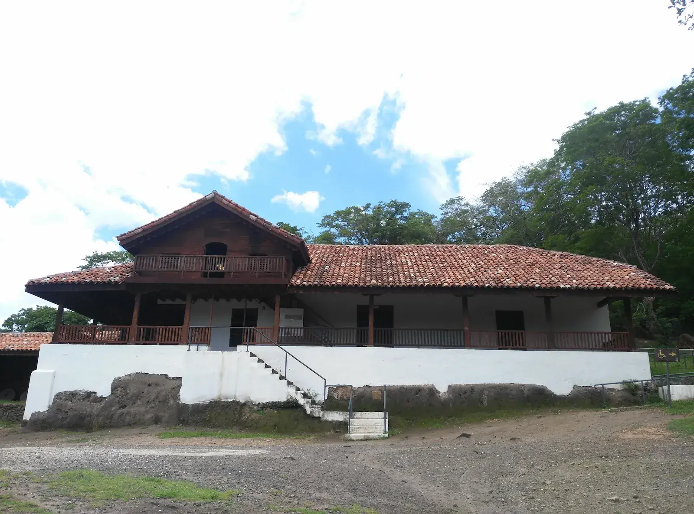
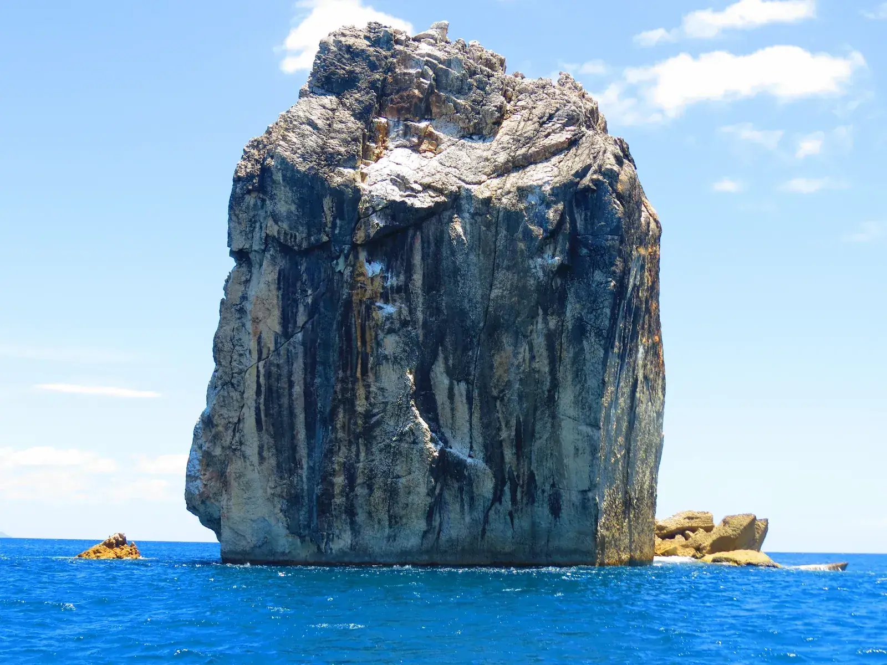
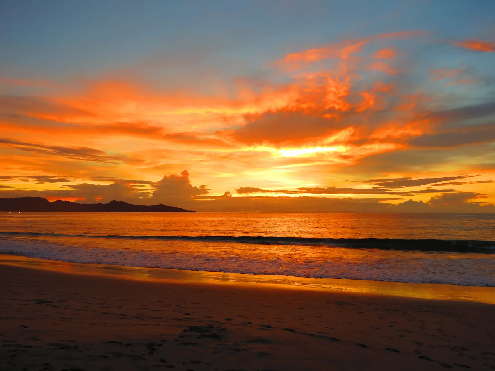

Playa Coco vs Samara: Which Beach Town Is Better for Your Costa Rica Vacation?
Playa Coco is livelier and closer to the airport; Samara is mellower and more scenic. Which fits your trip depends on the pace you want in Guanacaste.
Read Article →
Is Río Celeste Worth the Drive From Papagayo?
A balanced, locally-informed look at whether the famous turquoise river and its rainforest trail are worth the trip from the Papagayo area, plus who might prefer something closer.
Read Article →
Bat Islands, Costa Rica: A Remote Guanacaste Adventure
Far beyond Guanacaste’s resort beaches, the Bat Islands reveal a remote protected seascape of rocky islets, open Pacific water and remarkable marine life.
Read Article →
Costa Rica’s UNESCO World Heritage: Land, Ocean and Culture
Costa Rica’s four UNESCO World Heritage properties protect extraordinary forests, marine ecosystems, wildlife and an important part of the country’s pre-Columbian history.
Read Article →
Costa Rica Place Names Travelers Often Get Wrong
Tourism, social media and online maps can popularize names that differ from Costa Rica’s official cartography. Discover why correct place names matter.
Read Article →
How Many Beaches Does Costa Rica Really Have?
Costa Rica has hundreds of named beaches across the Pacific and Caribbean. Discover why counting them is complicated and what official maps reveal.
Read Article →
La Fortuna Without a Rental Car: An Honest Trip Recap
A traveler’s La Fortuna recap shows how to enjoy the region without a rental car, combining a domestic flight, boutique lodging, wildlife, local food and hot springs.
Read Article →
15 Best Things to Do in Papagayo, Costa Rica
From calm Pacific bays to volcanic hikes, turquoise rivers and sloth-spotting rainforest walks, here's a local's guide to the best things to do in and around Papagayo, Costa Rica.
Read Article →Plan your Destination Guides experience with a local expert.
Private transportation, personalized tours and practical advice in one conversation.